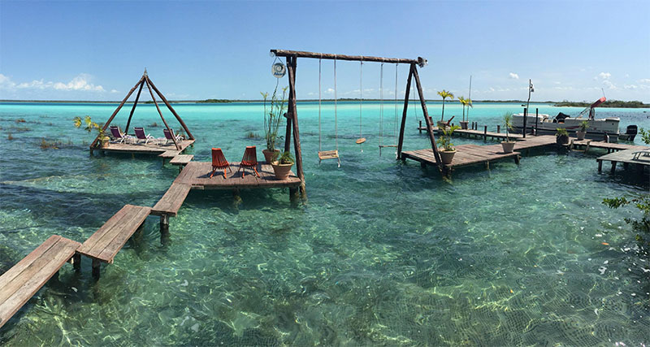

Viva Mexico...!
México es considerado un país "megadiverso", ya que forma parte del selecto grupo de naciones poseedoras de la mayor diversidad de animales y plantas, casi el 70% de la diversidad mundial de especies (considerando los grupos más conocidos: anfibios, reptiles, aves y mamíferos y plantas vasculares).
Nuestro pais es conocido por las playas en el Pacífico y el golfo de México, y su diverso paisaje de montañas, desiertos y selvas. Las ruinas antiguas, como Teotihuacán y la ciudad maya de Chichén Itzá, se distribuyen por el país, al igual que las ciudades de la época colonial española. En la capital Ciudad de México, las elegantes tiendas, los famosos museos y los restaurantes gourmet son parte de la vida moderna.
Principales Centros turisticos
Guanajuato
Esta bella ciudad, universitaria, colonial y con una intensa vida cultural, surgió gracias a la explotación del oro y la plata, y hoy es Patrimonio de la Humanidad. Entre sus lugares imprescindibles están la Basílica Colegiata de Nuestra Señora de Guanajuato, la Plaza de la Paz, la Alhóndiga de Granaditas, el Palacio Legislativo, el Teatro Juárez, la Universidad, el Templo de los Jesuitas y el Mercado Hidalgo. Por el mes de octubre, la ciudad es sede del Festival Internacional Cervantino, famoso evento dedicado la música de todos los géneros y culturas, con espacio para el teatro, la ópera, las letras y otras manifestaciones culturales.
cotizar viajeGuadalajara
La capital del estado de Jalisco es la segunda ciudad más poblada del país y no le va atrás a Ciudad de México en lugares de interés.Entre estos destacan su soberbia catedral, el Museo de la ciudad, el de Paleontología, el Regional, el de Cerámica y el pintoresco Museo De Arte Huichol Wixárika. Guadalajara es una ciudad con mucho movimiento cultural.Su Festival Internacional de Cine es la reunión cinematográfica más importante de Latinoamérica y la Feria Internacional del Libro es la más relevante de las letras de la América hispana.
cotizar viajeChichén Itzá
Es uno de los yacimientos arqueológicos más importantes del continente americano. Su Templo de Kukulcán es una de las Nuevas Siete Maravillas del Mundo Moderno, junto con la Gran Pirámide Guiza y otros 5 monumentos culturales del planeta. Está emplazado en el estado de Yucatán en lo que fue un importante centro ceremonial y ciudad maya. Otros lugares relevantes de Chichén Itzá son El Castillo, el Tzompantli o Plataforma de los Cráneos, El Caracol, el Templo de Los Guerreros, el complejo del Juego de Pelota y el Cenote Sagrado.
Oaxaca hierve el agua
Hierve el Agua Oa se conforma por una serie de cascadas petrificadas que se caracterizan por su color blanco y su inmensidad (miden más de 200 metros de altura). Se formaron hace millones de años por escurrimientos de agua carbonatada, cuya corriente se origina en los manantiales que están en la cima de la barranca. A su vez, estos manantiales crean un espectáculo único: son pozas de agua templada y color turquesa que se emplean como balnearios naturales (¡y como un increíble escenario para tomarse fotos!).
cotizar viaje
Quintana Roo
Si en la Huasteca Potosina cuentas con una gran variedad de lugares para disfrutar, a Bacalar le basta con uno, su laguna, para ofrecerte unas inolvidables vacaciones. La también llamada Laguna de los Siete Colores es impactante por su belleza, sus rápidos, sus estromatolitos y muy especialmente por sus embrujadores cenotes. La laguna es también sitio de moda para la motonáutica y otros divertimientos acuáticos. Fuera del agua, la localidad de Bacalar cuenta con otros sitios de interés turístico, como el Fuerte de San Felipe Neri y el Museo de la Guerra de Castas.
cotizar viajeSan Luis Potosi, pozas de xilitla
Conjugando espléndidamente la obra del hombre con la de la naturaleza, en el municipio potosino de Xilitla se encuentra un espectacular conjunto artístico, realizado por el acaudalado escultor escocés del siglo XX, Edward Jones. El conglomerado arquitectónico y escultórico se encuentra en un hermoso predio de más de 300 mil metros cuadrados y las piezas artísticas están admirablemente integradas a cascadas, pozas, jardines y otros componentes del entorno natural. Entre estas destacan La escalera al cielo, La recámara con techo en forma de ballena y LaCasa de los Peristilos, por nombrar solo tres.
cotizar viaje
Michoacán
La mariposa Monarca, la bella especie de característicos colores naranja y negro, ha sobrevivido en América del Norte gracias a un largo viaje de reposo que tiene a México como punto de llegada. Es el insecto que realiza el movimiento migratorio más largo, viajando 4.000 kilómetros para escapar del crudo invierno canadiense. En Michoacán tiene dos grandes santuarios, la montaña de El Rosario y Sierra Chincua. Los observadores de la vida silvestre se las arreglan para ver a estos curiosos insectos que se hospedan en México entre noviembre y marzo.
cotizar viaje
Chiapas, Palenque
Es una ciudad de origen maya en el estado de Chiapas, cuyos principales atractivos son sus yacimientos arqueológicos y sus hermosas cascadas. Buena parte de la zona arqueológica está aún por desenterrar, permaneciendo sepultada en la selva, pero lo que se ha develado es impresionante. Las principales edificaciones puestas al descubierto son El Observatorio, el Templo del Sol, el Templo de las Inscripciones, el Templo del Conde, el Templo de La Calavera, el Templo de La Cruz y El Palacio. En varios de ellos hay magníficos bajo relieves y otros elementos decorativos. Palenque es también famoso por sus caídas de agua, entre las que se encuentran Misol-Ha, Agua Azul y Agua Clara.
cotizar viaje
Estado de Mexico, Teotihuacan
Teotihuacán es «el lugar donde los hombres se convierten en dioses» en la lengua náhuatl y así te sentirás cuando asciendas a la Pirámide del Sol o a la Pirámide de la Luna y observes desde las alturas La Ciudadela, La Calzada de Los Muertos, la Pirámide de la Serpiente Emplumada y el Palacio de Quetzalpapálotl. Aunque el nombre es náhuatl, sus constructores pertenecieron a una cultura anterior y han sido fechadas en el Siglo I de nuestra era. La Pirámide de Sol se eleva 63 metros y es el tercer edificio precolombino más alto de Mesoamérica, después de la Gran Pirámide de Tlachihualtépetl, Cholula, ydel Templo IV de Tikal.
cotizar viaje